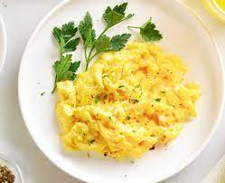

Dada's Scrambled Eggs!

Description: A lovely preparation of creamy scrambled
eggs. Tasty enough for the most critical of toddlers!
Ingredients:
- 2 Large eggs
- 2 tsp butter
- 2 tsp olive oil
- Garlic Powder
- Dried Parsley
- Salt
- 1 Tbsp Milk
Steps:
- Add oil and butter to pan. Mix and heat on Med until butter begins
to simmer
- Add garlic and stir until roasted. Remove from heat to cool
- Once pan cools, add eggs and mix until whites are dispersed
- Cook on low heat, stiring constantly to avoid sticking to pan
- Once eggs begin to cook into lumps, add milk and stir together
- Once eggs begin to lump once more, add salt and parsley and mix
- Cook to desired consistency and Serve!